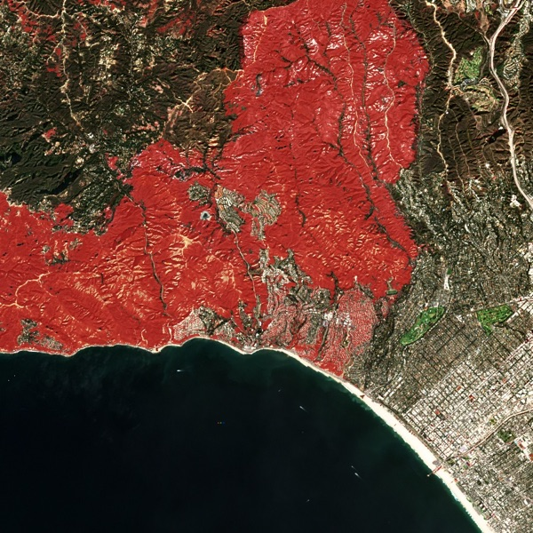

La Terre vue de l’espace, chaque jour
SnapPlanet montre n’importe quel lieu de la Terre à partir des images gratuites que les satellites prennent tous les quelques jours, et les traite sur votre iPhone : les événements vus de l’espace, l’avant et l’après, des timelapses depuis 1984, des lieux à voir.



Pour iPhone et iPad. Sans compte, sans pistage.
Images : contient des données Copernicus Sentinel modifiées ; Landsat fournies par l’U.S. Geological Survey ; MODIS fournies par la NASA ; GOES de la NOAA. Ils ne cautionnent pas SnapPlanet.